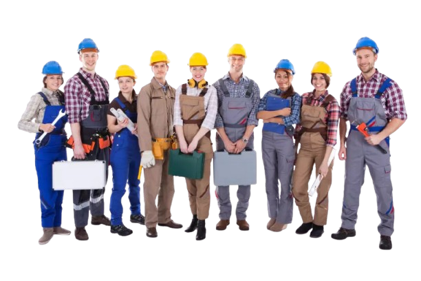

Der Kleidungsstil auf der Baustelle hängt von dem Beruf ab, den wir ausüben, ob Elektriker, Bauarbeiter oder Installateur
Ein Elektriker auf der Baustelle trägt in der Regel Schutzkleidung,
wie z. B. einen Helm, Sicherheitsschuhe, Handschuhe und eine reflektierende Weste.
Diese Kleidung schützt ihn vor möglichen Gefahren und sorgt für Sicherheit bei der Arbeit.
Ein Hydrauliker auf der Baustelle trägt oft Schutzkleidung,
wie z. B. einen Helm, Sicherheitsschuhe und Handschuhe.
Zusätzlich verwendet er wetterfeste Kleidung und Werkzeuge,
um seine Arbeit sicher und effizient auszuführen.
Ein Bauarbeiter auf der Baustelle trägt in der Regel Schutzkleidung,
wie z. B. einen Helm, Sicherheitsschuhe, Handschuhe und eine reflektierende Weste.
Zusätzlich kann er wetterfeste Kleidung und Werkzeuggürtel tragen,
um seine Arbeit sicher und effizient auszuführen.
Arbeitskleidung auf der Baustelle ist sehr wichtig, da sie Sicherheit und Arbeitskomfort gewährleistet.
Die Arbeitskleidung sollte aus strapazierfähigen Materialien bestehen.
Die Kleidung eines Installateurs, Elektrikers und Bauarbeiters sieht ähnlich aus,
unterscheidet sich jedoch, da jeder dieser Berufe eine andere Art von Arbeit erfordert.
Ein Installateur trägt wasserdichte Kleidung, ein Elektriker Kleidung, die keinen Strom leitet,
und ein Bauarbeiter trägt Kleidung, die gegen mechanische Beschädigungen beständig ist.
